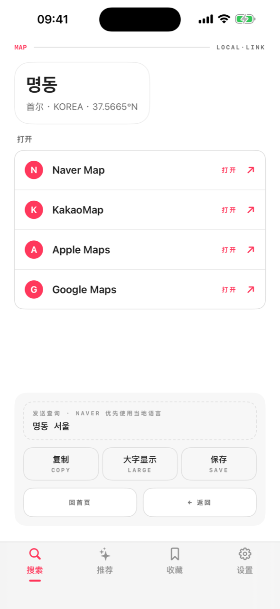
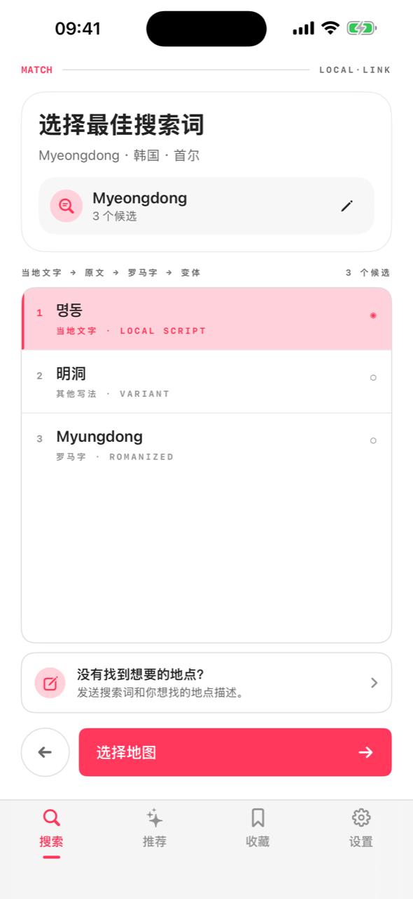
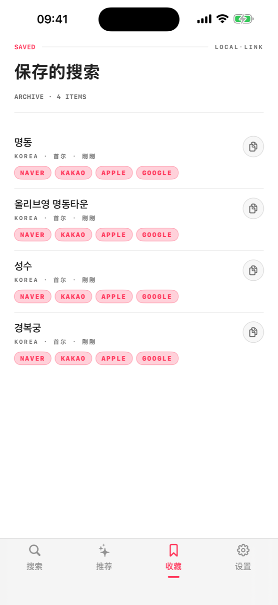

在韩国，谷歌地图很不好用 — 本地人都用 Naver 和 Kakao。当地链接把你知道的名字转换成当地文字的搜索词，再跳转到那个国家真正常用的地图应用。

选好国家和城市，应用会按当地的写法准备搜索。
英文或罗马字都可以 — 自动生成当地地图真正能识别的当地文字候选。
一键把转换后的搜索词发给 Naver、Kakao、Google 或 Apple 地图。没装应用就用网页打开。
当地地图服务用当地文字收录地点。在 Naver 输入“Myeongdong Kyoja”什么都没有，输入 명동교자 马上找到。
按目的地优先显示真正能用的地图应用。没有安装时自动改用网页地图打开。


转换数据内置在应用里，没有网络也能转换。
不需要账号，分析数据不会离开你的设备。
收藏的地点通过你自己的 iCloud 同步到 iPad，不经过我们的服务器。
首尔美妆、东京拉面 — 按目的地精选常用搜索。
简体中文 · English · 한국어 · 日本語 · 繁體中文，界面和转换都支持。
把当地文字全屏给出租车司机看，或复制到任何地方。